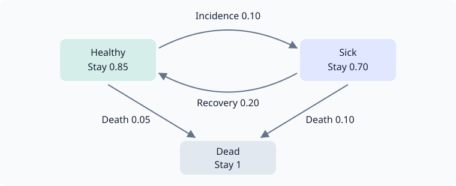

Building multi-state models
LifeContingencies.Experimental projects expected payments and computes policy values on finite-state models. A state contains everything needed to determine future transitions and payments. Recovery is allowed; the core has no universal definition of “in force”.
The interface is experimental and may change in minor releases.
A three-state model
Here a policyholder can be healthy, sick or dead. The one-year transition matrix is
\[P=\begin{pmatrix} 0.85 & 0.10 & 0.05\\ 0.20 & 0.70 & 0.10\\ 0 & 0 & 1 \end{pmatrix}.\]
Rows are starting states; columns are destinations in the order Healthy, Sick, Dead.

Supply sparse rows as iterables of next_state => probability. Each call must return the same row for the same arguments; the engine can request it more than once. A fresh single-pass iterator is also valid.
using LifeContingencies
using LifeContingencies.Experimental
struct RecoveryModel end
LifeContingencies.Experimental.states(::RecoveryModel) = (:healthy, :sick, :dead)
function LifeContingencies.Experimental.transitions(::RecoveryModel, interval::Interval, state::Symbol)
interval.stop - interval.start == 1 || throw(ArgumentError("this model supports one-year steps"))
state === :healthy && return (:healthy => 0.85, :sick => 0.10, :dead => 0.05)
state === :sick && return (:healthy => 0.20, :sick => 0.70, :dead => 0.10)
state === :dead && return (:dead => 1.0,)
throw(ArgumentError("unknown state $state"))
end
model = RecoveryModel()State labels must have a common type. Typed, hashable structs are useful when a state includes counters; the LTC example does this. states(model) is optional. Without it, forward projection discovers states from initial, and policy valuation needs explicit roots.
Name the payment components
A contract is a NamedTuple of StatePayment, TransitionPayment and CertainPayment components. The empty contract is (;). Payment functions return signed amounts: here benefits are positive and premiums negative, so the sum is an insurer's net liability.
| Component | Function | Settlement |
|---|---|---|
StatePayment(f) | f(time, state) | At each grid time, in the occupied state |
TransitionPayment(f) | f(interval, from, to) | At interval.stop, including self-loops |
CertainPayment(times, amounts) | Explicit dated amounts | At its own dates, regardless of state |
This one-year contract collects 10 now from a healthy policyholder, pays 100 if sick at year end, and pays 1,000 on death during the year:
contract = (
premium = StatePayment((t, s) -> t == 0 && s === :healthy ? -10.0 : 0.0),
care = StatePayment((t, s) -> t == 1 && s === :sick ? 100.0 : 0.0),
death = TransitionPayment((interval, from, to) -> interval.stop == 1 && from !== :dead && to === :dead ? 1_000.0 : 0.0),
)
grid = 0:1
initial = [:healthy => 1.0]
curve = 0.05Project forward
projection = project(contract, model; grid, initial, history=true)
@assert sum(values(projection.final)) ≈ 1.0
@assert projection.final[:sick] ≈ 0.10
map(cfs -> [(cf.time, cf.amount) for cf in cfs], projection.cashflows)(premium = [(0, -10.0), (1, 0.0)], care = [(0, 0.0), (1, 10.0)], death = [(1, 50.0)])cashflows has one vector of dated FinanceCore.Cashflows per component. State components include every grid time, transition components every interval end. final is the occupancy distribution at the last time. history=true also returns occupancy at each grid time. The displayed pairs are (time, expected_amount). Individual paths have different payments.
The expected care and death payments at year end are 10 and 50. Their total PV, less the premium at issue, is $-10+(10+50)/1.05$:
pv = present_values(contract, model, curve; grid, initial)
@assert sum(pv) ≈ -10 + (10 + 50) / 1.05
pv(premium = -10.0, care = 9.523809523809524, death = 47.61904761904761)Use present_values when you need component PVs without retaining cash flows or occupancy history. Occupancy and amounts default to Float64; pass numbertype=BigFloat for higher precision, with compatible input probabilities and payment functions.
Policy values and payment phases
At a grid date t, incoming transition payments have already settled. The before value $V^-(t)$ includes state payments at t; after, or $V^+(t)$, excludes them. Certain payments at t follow the same before/after distinction.
Let $t_k=\mathrm{grid}[k]$, with final grid date $t_n$, and let $P_k(i,j)$ be the transition probability from $i$ to $j$ over $(t_k,t_{k+1}]$. For a state or transition component, write $b_k(i)$ for its state payment and $r_k(i,j)$ for its edge payment. For a state component $r_k=0$; for a transition component $b_k=0$. Use the interval discount factor $v(s,t)=v(t)/v(s)$, where $v(t)$ discounts from issue. Backward valuation uses
\[V^-_k(i)=b_k(i)+v(t_k,t_{k+1})\sum_j P_k(i,j) \left[r_k(i,j)+V^-_{k+1}(j)\right],\qquad V^-_n(i)=b_n(i)+\operatorname{terminal}(i).\]
terminal supplies the after-payment continuation value at the final date. Zero is appropriate here because the one-year contract has ended. It is also a possible explicit truncation assumption; ending the grid alone does not settle an open obligation.
policy = policy_values(contract, model, curve; grid, terminal=0, history=true)
@assert all(isapprox(a, b) for (a, b) in zip(pv, policy.before[:healthy]))
@assert sum(policy.after[:healthy]) ≈ sum(policy.before[:healthy]) + 10
(before_state_payments = policy.before[:healthy], after_state_payments = policy.after[:healthy])(before_state_payments = (premium = -10.0, care = 9.523809523809524, death = 47.61904761904761), after_state_payments = (premium = 0.0, care = 9.523809523809524, death = 47.61904761904761))Results cover the requested root states, defaulting to states(model). For this model that includes sick and dead policy values as well. With history=true, records cover states reachable at each date from those roots.
For a nonzero continuation, pass a named tuple of functions, one per state or transition component. For example, suppose an additional obligation after year one has a value at that date of 25 if sick and zero otherwise. Supplying it explicitly adds its expected discounted value to the contract:
continuation = (premium=s -> 0.0, care=s -> s === :sick ? 25.0 : 0.0, death=s -> 0.0)
continued = policy_values(contract, model, curve; grid, terminal=continuation)
@assert sum(continued.before[:healthy]) - sum(pv) ≈ 0.10 * 25 / 1.05
continued.before[:healthy](premium = -10.0, care = 11.904761904761903, death = 47.61904761904761)Certain components never take terminal values: they are discounted directly.
Distributions and conditioning
A known state is [state => 1.0]. A mixture is a vector of pairs or a dictionary. Forward projection supplies the unconditioned distribution at a future date; condition restricts it to an event and normalizes:
in_force = condition(projection.final, s -> s !== :dead)
@assert sum(last, in_force) ≈ 1.0
in_force2-element Vector{Pair{Symbol, Float64}}:
:sick => 0.10526315789473685
:healthy => 0.8947368421052632An event with probability zero raises a DomainError. Observing both individual statuses and merely observing an active joint contingency produce different distributions. See Joint lives.
Value is linear in the initial distribution. Conditioning itself is nonlinear because it normalizes. For an equal mixture of healthy and sick starts:
mixture = [:healthy => 0.5, :sick => 0.5]
mixed = present_values(contract, model, curve; grid, initial=mixture)
@assert sum(mixed) ≈ (sum(policy.before[:healthy]) + sum(policy.before[:sick])) / 2
mixed(premium = -5.0, care = 38.095238095238095, death = 71.42857142857143)Certain payments and the horizon
A certain component uses its own dates, including dates past the projection grid. Its valuation needs no mortality transitions. Here the only occupancy date is time zero, while a second guaranteed payment occurs at time two:
certain = (guarantee = CertainPayment([0.0, 2.0], [1.0, 1.0]),)
fixed = present_values(certain, model, curve; grid=[0.0], initial)
@assert fixed.guarantee ≈ 1 + discount(curve, 2)
fixed(guarantee = 1.90702947845805,)project still needs valid rows for every interval over which it reports occupancy. present_values and policy_values can value an all-certain contract without those rows. For mixed contracts, all required contingent intervals must be supported.
Supported intervals and mathematical checks
The grid is a strictly increasing, nonempty collection of numeric curve times. Convert calendar dates using your chosen day count before supplying it. Models decide which intervals they accept: this model accepts one-year steps; the LTC model accepts months. There is no automatic fractional-step conversion.
Rows must be nonnegative and sum to one up to the rounding allowance. The engine validates rows without rescaling them. A model's state must include any duration or benefit memory needed to make those rows and payment functions depend only on the current state.
Each property below can be checked numerically, and makes a good test for a new model:
- Composition: projection over successive supported intervals composes. A direct coarse interval must be consistent if the model supports it. Payment accrual needs its own refinement check; transition composition alone does not establish it.
- Additivity: named components add, and
(;)is worth zero. - Linearity: value of a mixture is the mixture of values before conditioning.
- Duality: forward component PVs equal the initial-distribution-weighted backward values, with the same payment phases and terminal assumptions.
- Discounting: interval factors compose on a fixed curve.
Forward/backward agreement is supplemented by hand calculations and path enumeration in test/engine.jl.
Performance
project stores dated streams even without history; present_values folds forward. Backward values use rolling buffers plus stored reachable frontiers, so discovering an expanding state space still consumes memory. Requesting history stores the additional occupancy or policy-value records.
Continue with the LTC worked example or the experimental reference.